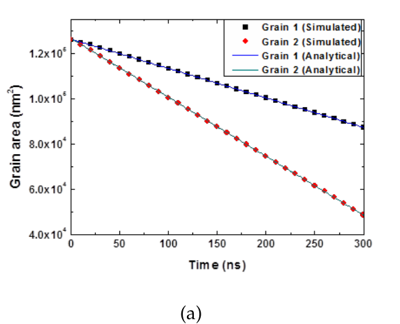
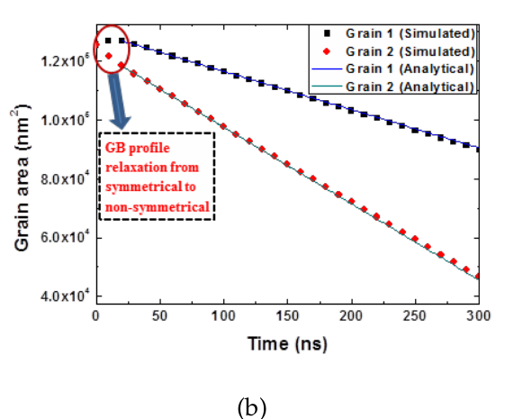

Grain Boundary Anisotropy
The physical fidelity and accuracy of the predicted grain growth depend on the accuracy of phase field parameters. In the Ginzburg-Landau equation
The parameters , , and should be determined from GB properties (energy and mobility ), which are usually obtained from Molecular Dynamics computation. There are different methods around to relate these parameters with GB properties. The only requirement for the parametrization is that the parameterized model can reproduce the desired GB properties.
The phase field module implements the parameter determination method developed by Moelans et al. Moelans et al. (2008). For isotropic GB properties, these phase field parameters are expressed as
where is the diffuse GB width, and is the chemical free energy at the saddle point. The parameters are uniform across the system. The isotropic material model is implemented in GBEvolution.

Double-circle grain test
For systems with misorientation dependence of GB properties, a set of GB energies and mobilities as functions of misorientation angle should be considered. An iterative procedure was used to calculate the parameters for each misorientation , which are then interpolated through the following functions to obtain the continuous phase field parameters at each integration point,
where represents parameters , , or . is set to be constant. More details on the parametrization are referred to Moelans 2008.
A double-circle grain test is used to validate the implementation of GB anisotropy with misorientation. In the right figure, two circular grains of the same initial size are embedded in a matrix grain, and they would shrink under the driving force of reducing total GB area. It can be proven that the changing grain area of either circular grain should follow

Area evolution of grains with different mobilities

Area evolution of grain with varying grain boundary energies
where is the initial grain area. We performed two tests where different properties were assigned to GBs formed by the two circular grains and the matrix. First, these two GBs have the same boundary energy but different mobilities (). Second, they obtain the same GB mobility but different energies (). The simulated and analytical grain area evolution are compared in following figures.
Apart from little non-linearity at the beginning of the 2 test simulation due to GB relaxation from symmetrical to non-symmetrical profile, the grain area evolutions agree quite well with analytical solution, which shows the phase field parameters determined from this method reproduces exactly the desired GB properties.
The anisotropic GB properties are implemented in material GBAnisotropy to determine the phase field parameters.
References
- N. Moelans, B. Blanpain, and P. Wollants.
Quantitative analysis of grain boundary properties in a generalized phase field model for grain growth in anisotropic systems.
Physical Review B, 78(2):024113, Jul 2008.
URL: http://link.aps.org/doi/10.1103/PhysRevB.78.024113 (visited on 2016-06-02), doi:10.1103/PhysRevB.78.024113.[Export]